Goats (new with animal welfare information)
Introduction
Understand goats as the animals they are
Goats are social animals, which like to be part of a herd. They are hunted by predators, and therefore they feel safe in a herd. They have a strong hierarchy, and every goat herd has a herd queen. They have a lot of butting behavior and that is one reason for keeping horned and dehorned goats strictly apart. The kids of this goat queen will be very high ranking in the herd. The positions in the herd - especially the queen - will often be very long lasting. Goats are curious, and 'the grass is always greener on the other side of the fence' for goats: they are lively and explorative. Fences should always be well maintained - they will find the slightest weakness. Goats will often be biting and chewing on everything, but far from always. Goats are natural browsers and will eat leaves, shrubs, wines and twigs. They have a broad variety of things to eat, and they have a good sense of taste - they are told to be able to distinguish between sour, salt, sweet and bitter. They are well adapted to limited water intake. They are told to eat more than any other ruminant but this is not true - they spend much time on it because they move over quite some distances to get to eat what they want.
One signal of goat wellbeing is that they keep their tail upright. If it is 'hanging', it is because the goat is ill or depressed for some reason.
Goats have a strong odour, and if not properly controlled, It can be an argument for not having male goats. Control of male goat odor (smell) is achieved by good hygiene practices and correct housing with air, good bedding, space and high hygiene levels. If they have sufficient choice, they will always avoid eating plants contaminated with urine or feces from their own species. The male goat becomes often aggressive and dominant during the breeding season.
Breeds and Crosses
| Region | Goat |
| High altitude | Saanen, Toggenburg, East African goats |
| Medium altitude | German Alpine, East African goats Gala, Boer, Toggenburg, Angora |
| Low altitude | East African goats, Gala, Boer |
Andrew G. Marete
| 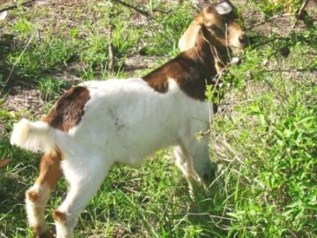 |
| Cross bred: Pedigree registered Toggenburg buck to a pedigree Boa doe |
| (c) Val Corr, Naivasha, Kenya
|
Categories of goats
Goats fall into four categories: meat, wool, dairy and dual (multi) purpose. Some goat breeds are dual purpose (e.g. meat and wool, or meat and milk). However, a majority of the current commercial breeds have been developed with specialization to one primary product in mind e.g., milk or dairy.
The meat breeds are produced from many goat breeds including milk goats. Some breeds have been selected specifically for meat production, such as the South African Boer and Galla and East African goats.
When selecting animals, it is important to think about the environment that they are to live in. Many pure bred animals come from Europe, where the climate is cool and good quality fodder plenty. These goats are not usually suited for hot dry areas with little available fodder.
Note: If you are buying milk goats, check the udders to ensure that there is good udder surface and that there are two good teats, and that the teats themselves are not too small. If the udder has small teats, they are very difficult to milk. On a good quality dairy goat the teats should be facing slightly forward for ease of milking.
Breeds such as the East African or the Galla goat have survived for centuries in East Africa with few problems and have good disease resistance. Farmers who want to improve their indigenous breeds by crossing their goats with exotic milk breeds must make sure they have enough good quality fodder and plenty of water available for drinking. Also improved housing for protection from predators and theft at night will help make the enterprise successful.
Meat Breeds
East African Goat
| 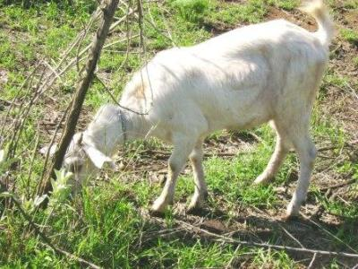 |
| 9th month well grown East African doe |
| (c) Val Corr, Naivasha, Kenya
|
| 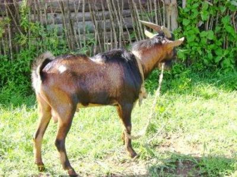 |
| 1 year old East African buck crossed with a German alpine |
| (c) Val Corr, Naivasha, Kenya
|
This is one of the most successful domestic goat breeds suitable for the semi arid lands. They are found all over East Africa from the arid areas to urban areas. Their colour ranges from pure white to black over a variety of spotted and reddish brown colours. The males often have a pronounced mane running the full length of the back. Horns vary from 2.5 cm to 20 cm long. Tassels (sometimes referred to as "toggles", which are situated at the top of the neck, behind the jaw) are found in 30% of the breed.
Body weight: Males up to 35 kg, females 25-30 kg
Sexual maturity is usually reached in 5-6 months, but growth rate is slow. Yearlings seldom weigh more than 20 kg. The average age at first service ranges between 458 to 655 days with a kidding interval of 400 days. They have a kidding rate of 65% with a prolificacy of 0.95-1.10 meaning that they rarely twin. They have a birth weight of 3 kg and a weaning weight of 6.3 kg. They are kept mainly for their meat, as milk production usually is only enough for one single kid. They do have a potential for selection and are useful breeding stock for upgrading breeding. In their present unimproved form their greatest advantage is the ability to survive in almost any environment. Among the valuable characteristics of these goats is a tolerance to heartwater (an endemic tick-borne disease) and worms and possibly other diseases such as mange.
Galla Goat
| 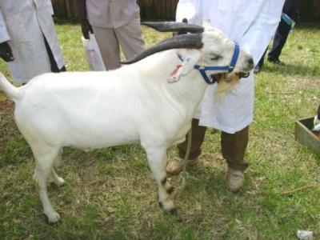 |
| Galla buck |
| (c) Val Corr, Naivasha, Kenya
|
| 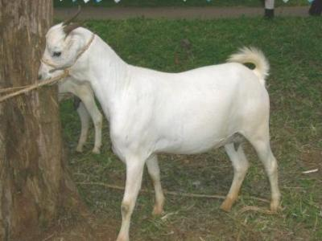 |
| Galla doe |
| (c) Val Corr, Naivasha, Kenya
|
Galla are indigenous to the Northern areas of Kenya. It is also known as the Boran or the Somali goat. They have further been classified into 2 sub types, a short eared medium sized goat called "Degyir" and a larger pure white type called "Degeun". Adult bucks of the Degeun type can weigh up to 70 kg, while a female will reach a kidded weight of 45-55 kg.
In order for the Galla goat to comply with the Kenya Stud book, all Gallas must be white haired with black skin, nose, feet and under tail.
A third sub type of Galla is kept by the Boran, which has colour around the head and lower legs with a black stripe down the spine. These are reputed to be the best milk yielders of all the Galla type goats. Galla females are long lived and will continue to breed and rear healthy kids up to 10 years of age.
Galla do not like cold wet climates and thrive best in low altitude, preferably in acacia bush country. They have a wonderful high growth rate after prolonged droughts and their larger size enables them to reach browse that the smaller East African goats cannot reach.
Boer
| 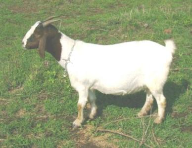 |
| Mature in kid pure bred boer female |
| (c) Val Corr, Naivasha, Kenya
|
| 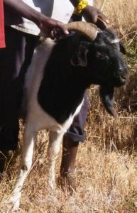 |
| Black head boer ram |
| (c) A. Bruntse, Biovision
|
Milk Breeds
Alpine
| 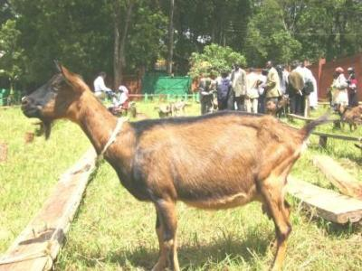 |
| Alpine doe |
| (c) Val Corr, Naivasha, Kenya
|
| Genetic Group | Percent German Alpine blood | Crosses |
| Foundation | 75% | Back cross 1 (R1): PAB x F1 Females |
| Intermediate | 87.5% | Back cross 2 (R2): PAB x F2 Females |
| Appendix | 93.75% | Back cross 3 (R3): PAB x R2 Female |
| Pedigree | >93.75% | Interse mating of Back cross 3: R2 Male x R2 Female. Offspring will remain 93.75% or more |
| OR | PAB x R2 Female -->Grading-up. Offspring will be 93.25% or more |
Andrew G. Marete
Toggenburg
| 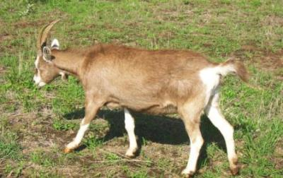 |
| Pedigree in kid maiden Toggenburg |
| (c) Val Corr, Naivasha, Kenya
|
| 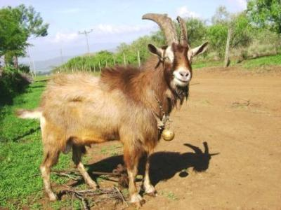 |
| Mature pedigree Toggenburg buck |
| (c) Val Corr, Naivasha, Kenya
|
Kenya. It originated from Toggenburg in Switzerland. There are two sub-types of Toggenburg:
The British Toggenburg males weigh up to 100 kg and females about 70 kg.
The Swiss Toggenburg males weigh about 70 kg and the females about 50 kg.
They have an average birth weight of 3.3 kg with a weaning weight of 19 kg and average daily gain of 136 g/day. Studies have shown that the smallholder farmers are able to maintain comparably high levels of milk production in the first three parities, with yields of 475 - 520 l in the first, second and third parity respectively. The kidding interval has a range of 302+-117 days. Studies have demonstrated that the Toggenburg goats are able to perform and thrive reasonably well under the low-input farming conditions.
Colour: brown, chocolate, fawn with white line each side of the face from above the eyes to muzzle, edges of ears, on rump and tail. Legs white from knees down. Males tend to have longer hair than the female.
Suffer from heat stress in hot climates. Do not thrive if badly housed, kept on poor pasture or put away when they are wet. These are 'high quality animals and should only be kept if conditions are right. For smaller farmers and, particularly, nil grazing situations, cross bred Toggenburgs would be a better option.
Purpose: milk production and cross breeding (improving local breeds). Butter fat 3.8%. Average litter size: 1.8
Saanen
|
|
| Saanen goat |
| (c) Wikipedia
|

{kind=link}
{kind=link}
{kind=link}
Dual purpose breeds
The Kenya Dual purpose goat (KDPG)
Goats for wool fibre
Angora goat
| 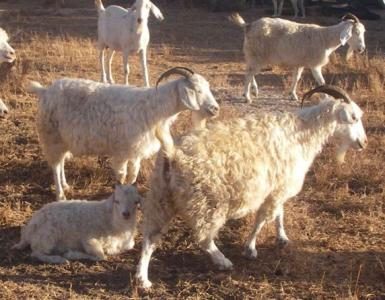 |
| Angora goat |
| (c) Anne Bruntse, Biovision
|
Herd Management for Reproduction
| Breed | Fertility | Fertility | Fertility | Litter size ) | Birth weight (kg) | Weaning weight (kg) |
| Age at first mating (day) | Kidding interval (days) | Kidding rate (%) | Number of kids | |||
| Angora | 1.00 | 2.4-3.4 | 18.1 | |||
| Boer | 1.20-1.80 | |||||
| E.A. goat | 458-655 | 399+-256 | 65 | 0.95-1.10 | 3.0 | 6.3 |
| Galla | 425-598 | 411+- 189 | 72 | 1.03 | 3.6 | 10.3 |
| Kenya Alpine | 135-504 | 392+-164 | 78 | 1.44 | 3.1 | 16.3 |
| Saaneen | 291 | 81 | 1.13-1.50 | 3.1 | 12.9 | |
| Toggenburg | 547-572 | 302+-117 | 86 | 1.80-2.00 | 3.3 | 19.0 |
Andrew G. Marete
Reproduction and Fitness traits
- Fertility - refers to the number of parturitions (births) per female of breeding age. It can be calculated as:
Fertility Rate (called kidding rate in above table) = (total of kidding females/Total of females at mating)*100% - Prolificacy and twinning - Prolificacy refers to the litter size and is defined as the number of progeny born per parturition. It can be calculated as:Prolificacy rate = (Total of births/Total of Kidding females)*100
Inspection and evaluation of a goat
After determining the breed and sex of the goat the next useful step is to examine the teeth. Breakdown of the teeth is a very common reason for culling small stock under range management, as poor quality teeth will affect the ability to browse and feed well.
The Galla goats have very strong teeth well able to keep them healthy during a long life. Worn teeth indicate old age. Goats which do not have healthy teeth cannot feed properly, and will not gain weight at the expected rates. Neither will they be good breeding stock. Make sure the lower teeth meet evenly with the upper teeth.
Ageing goats by their teeth:
| Age | Teeth |
| Under 1 year old | milk teeth |
| 1 - 1 1/2 years old | 2 teeth |
| 2 years old | 4 teeth |
| 2 1/2 years old | 6 teeth |
| 1 1/2 - 3 years old | Full mouth |
| Over 3 years old | Worn teeth |
| Aged | Gumming |
The Buck
Reproduction in Bucks
| 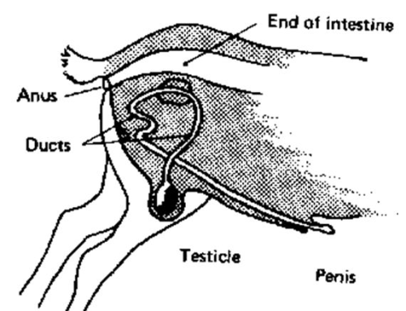 |
| The buck's reproductive tract |
| (c) Better Farming Series 12. Sheep and Goat Breeding (FAO, 1977 |
Nutrition has a large effect on a buck's libido, semen volume, sperm count per ejaculate, and percentage of live sperm, sperm motility, semen fructose concentration and percentage of abnormal spermatozoa. In a similar way nutrition levels can have dramatic effects of does. A sudden availability of good feed for example can induce oestrus and ovulation rates and an increase in multiple births. Conversely severe under nutrition can cause the cessation of all reproductive processes. However, in Angora goats, the biggest factor influencing multiple births is pre-breeding nutrition and flushing does before breeding.
Do not use bucks with one or no testicles for breeding. Also those with swollen testicles should be refrained from breeding. A breedingbuck should have 2-8 hard teeth. Breeding bucks should have superior qualities, such as body size and muscle conformation and for Saanen breeds they should have horns. A noisy buck is said to be a useful buck.
Buck preparation for breeding season
- The live-weight of the buck should be estimated (weighed or weight-taped) and body condition judged 3 months prior to breeding. This will give you time to build up its weight and body condition before breeding season if it is not adequate.
- The body condition score should be 3-3.5. If it is higher or lower than that, adjust feed to achieve correct score before entering breeding season.
- Just prior to breeding season, clip excessively long hair from underside
- Trim feet
- Check ease of movement. Does the buck have trouble walking? Hip or leg pain? If so, he will not be able to mount the does. Try to cure it or, if prognosis is not good, find another buck.
- If you buy a herd right before breeding season and the buck is too fat, do not put him on a diet at that time. Keep feed steady, and make sure you don't feed any extra feed. Move food and water apart so he gets exercise. He will also run off excess weight chasing does.
| Breeding dairy buck in good condition |
| (c) Valerie Corr, Kenya
|
Scrotal circumference predicts the fertility of daughters, so you want a buck with a large scrotum.
Make sure both sides of the scrotum are the same size, are smooth and lump-free and are well attached.
The scrotum should not have two separate oblong chambers, but instead, one chamber with an indentation between the two areas.
| 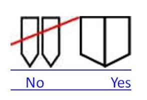 |
| The scrotum should not have two separate oblong chambers, but instead, one chamber with an indentation between the two areas. |
|
|
Number of does serviced per buck
Signs that the buck is ready for breeding
The Doe
The udder should be soft to the touch with two functional teats. Any hardness is a sign the doe has had previous problems most likely with mastitis. A doe with a damaged udder may not be able to produce enough milk to feed her young ones. Look for good strong legs. Weak or bent hind legs will make the goat unable to feed on good browse. Blind females will not be able to find good food in a range style management.
Desirable Characteristics in the Doe
1) She should be a large animal - not related to the breeding buck, excellent on conformation with a well developed body which displays the particular breed characteristics
2) For meat goats the rectangular conformation of the "blocky" meat animal should be apparent. The dairy animal should display the wedge shaped conformation typical of a good dairy animal.
3) She should be a twin (in order to pass on the twin trait)
4) She should be of a good temperament, particularly for dairy goats. Docility and good mothering ability are good features.
5) She should be a good milker; for dairy goats records of performance of the dam can give information about milking ability.
Sex Ratio: The sex ratio gives an indication of the proportion of males to females born for individual breeds of goats. The ratio is weighted more in favour of males than females for horned goats. The reverse is the case for polled breeds (such as Saanen). In the case of Saanen however, abnormal ratios occur with the production of intersexes or hermaphrodites. This is due to the presence of a dominant gene which prevents horn growth and is closely associated with abnormal development in polled does. Males, whether polled or horned, are normal.
 |
| Milk goat in good condition |
| (c) Val Corr, Naivasha, Kenya
|
Feeding Does
- The food value of the forage decreases every day as the dry season continues
- The nutritional demands of the unborn kid (fetus) is growing daily
- As the fetus grows, the volume of the uterus expands, thus reducing the room available in the stomach to store and digest food
- As the female's body weight increases, the stress on her legs become greater and her ability to browse and find good feed is reduced.
Management of breeding does
2. The pregnancy period (mating to kidding) - approximately 5 months
3. The lactation period (kidding to weaning) - until 2 months into next pregnancy
The Dry Period
Table 2, Average daily mineral and trace element requirements for different categories of goat
| Category | kgDM | Ca | P | Mg | Na | K | Cl | S | Cu | Co | Mo | J | Zn | Mn | Fe | Se |
|
|
| g | g | g | g | g | g | g | mg | mg | mg | mg | mg | mg | mg | mg |
| young, pregnant | 1.6 | 3.6 | 3 | 1.6 | 0.6 | 7 | 1 | 2.4 | 18.6 | 0.16 | 0.16 | 0.5 | 26.7 | 72 | 100 | 0.23 |
| Pregnant | 1.7 | 3.7 | 3.2 | 1.7 | 0.7 | 7.3 | 1 | 2.55 | 20 | 0.2 | 0.17 | 0.5 | 28 | 68 | 92 | 0.17 |
| 2 kg milk | 2.7 | 6 | 8 | 3 | 2.1 | 17 | 7.4 | 5 | 27 | 0.25 | 0.25 | 0.5 | 60 | 98 | 28 | 0.3 |
| 3 kg milk | 2.7 | 8 | 10 | 3.8 | 2.7 | 21 | 8.6 | 5.4 | 31 | 0.27 | 0.27 | 0.5 | 66 | 108 | 29 | 0.3 |
The Pregnancy Period
Good feeding during pregnancy produces greater development of udder tissue and ensures a high milk i potential. A higher level of food offered for the last 2 months of pregnancy has the following advantages:
It is high recommended that goats are kept off the ground on slatted floors and not on a concrete floor as they do not drain properly, are uncomfortable and cold (see housing). After weaning, the does can be divided into two or three groups, and fed according to their condition. With small numbers, the animals can be hand fed individually. All does should, however, be exposed to a rising plane of nutrition, a process referred to as flushing in preparation for pregnancy. Flushing stimulates the number of ova shed, thus increasing the potential for more eggs to be fertilized and resulting in higher kidding percentages.
Reproduction in Does
The average length of oestrus cycle is 18 to 21 days but it can vary from 18 to 24 days. The presence of the male can trigger oestrus.
Oestrus in does is characterised by the following symptoms:
2. Wagging of the tail rhythmically from side to side
3. Redness and swelling of the vulva
4. Mucus discharge from the vulva
5. Mounting of other goats, and allowing mounting by others
6. A lack of interest in feeding
7. A drop in milk production in some lactating does.
Body condition
Good breeding goats should not be thin and nor should they be allowed to carry too much fat. Thin goats will not come into heat, if mated they will either abort or reabsorb the foetus into the body at an early stage. Those who manage to give birth may not be able to feed and rear a kid satisfactorily. The dairy goat is naturally more leaner than a meat goat.
Selling/Retiring animals
At the start of each breeding season or in the case of ASAL areas, at the end of each rainy season when a drought is expected, a good goat manager inspects his/her flock and determines which ones are to be sold (for meat or fattening by other farmers/pastoralists with more grazing available). Unproductive and unwanted goats are eliminated from the flock in order to improve the level of productivity. This enables the breeder to maintain the flock at a high level of productivity. A good alternative is also to retire the unproductive animals and take care of them until they die a natural death. This is respectful to the animal. individual sentient beings whose lives deserve to be respected and valued. For this it is best to keep them apart from the reproducing flock.
Starting with the poorest animals, the following are traits that should be avoided in a prosperous breeding herd:
- females with poor udders
- females who have been barren for 2 or more breeding cycles
- females with a history of aborting
- skinny females
- animals with poor teeth (dry season browsing need good teeth)
- bucks with faulty testicles
- bucks with physical deformities
- shy and timid bucks (seen to be poor breeders)
| 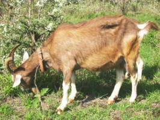 |
| Milk goat in poor condition |
| (c) Val Corr, Naivasha, Kenya
|
Breeding and management of kids
Mating systems
DEFINITION: Inbreeding
Inbreeding can have dramatic effects on a herd. Most animals carry undesirable genes that usually remain hidden unless the animal is inbred. An inbred individual is more likely to express undesirable genes, and hence, undesirable traits. Inbreeding does not create undesirable recessive genes, but it does tend to bring to light these unfavorable genetics. This leads to a decline in average productive performance called inbreeding depression.
Effect of Inbreeding in a Herd
Comparisons of Mating Systems
| Trait | Inbreeding Trait | Outbreeding |
| Uniformity | Good | Poor |
| Fertility | Poor (to good with selection) | Good |
| Growth | Poor ( to good with selection) | Good |
| Predictability | Good | Poor |
| Overall vigor | Poor ( to good with selection) | Good |
| Longevity | Moderate | Good |
Some choices of breeding strategy for different producer goals
| Goal Uniform offspring Supreme show goats Rapid growth meat kids | Inbreeding Good choice with selection Poor in most cases Moderate at best | Outbreeding Good in first cross, then poor Good if non-uniform goats Good to excellent |
N/B: THERE IS NO ROOM FOR PRACTICING INBREEDING IN SMALL-HOLDER FARMING.
Objectives for Breeding Plans
- Reproduction rate - litter size per birth or per year
- High efficiency of feed conversion - translating to rapid growth rate for kids.
- Better milk yields
- Bigger body size
- For angora goats: Better fibre quality or body size
Both quantity and quality must go together for efficient production. High growth rate and production of the maximum number of goats for slaughter should be associated with an acceptable distribution of fat i.e., sufficient to improve the quality of the meat but not so much as to have a low consumer preference.
The phenotypic expression of characteristics refers to the physical manifestation of a gene, i.e. the observable trait. Thus the length of ear in a goat is the phenotypic expression of the genes that regulate ear length. The breeder can only plan according to the trait observed. Repeatability and heritability are two kinds of observation that the breeder can use.
Substitution
- where the existing population of indigenous goats is small
- where level of productivity of indigenous goats is low
- where the requirement of animal protein from goats is urgent and demands accelerated development.
- where the ecological environment is suitable for large scale goat production.
Grading-up
Grading-up indigenous goats with one or more temperate breeds is common in East Africa. Likewise one or more dairy breeds have been used to grading-up indigenous goats for milk production. Probably the best example of upgraded goats are the indigenous goats of East Africa with imported Swiss and German dairy goats.
 |
| Simple Breeding Plan |
| (c) Andrew G. Marete 2011
|
Practical Applications of improving goat herds:
Objective for improving the herd might include:
- Breeding for increased milk yield and twinning ability e.g. crossing and grading ?up of the East African goat with an exotic breed such as is the case of
- The Kenya Alpine dairy goat: contains Alpine blood. (Both German Alpine and French Alpine)
- The Toggenburg goat: contains Toggenburg blood for increased milk production.
- Breeding for increased milk, meat production and increased disease resistance:
- The Kenya Dual Purpose goat ( please link to Dual Purpose breeds above)
Crossbreeding (for more information go to cattle - breeds and breeding)
- Outstanding individual merit
- Intermediate expressions between the parent types
- Resemblance to one or other of the parent types
- It should be the objective of the breeder to produce offspring superior to both parents. This is achieved when the progeny resulting from crosses demonstrate extra or improved performance above the average of the parents (heterosis or hybrid vigor).
- There is no doubt that crossbreeding is an important method of commercial goat production. The vigour, thrift and general excellence of the first cross goat are features that are especially apparent and which can be measured accurately in terms of increased returns. As goat production becomes more intensive for both meat and milk production.
Reproductive Behaviour
Puberty
Breeding Periodicity
Kidding
- The first sign of kidding is swelling of the udder a week before the kidding
- Uneasiness, including restlessness, sitting down and getting up and smelling the ground. When this happens, kidding can be expected to occur within 1 - 2 hours.
- Appearance of the water bag
- Appearance of part of the kid
- Onset of contraction
| 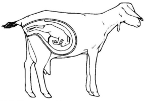 |
| Abormal delivery (normal: front legs and head are presented first) |
| (c) Andrew G. Marete
|
| 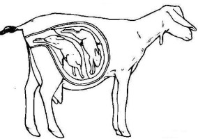 |
| Normal presentation of twins |
| (c) Andrew G. Marete
|
- One leg held back
- Two legs held back
- Kid upside down
- Back to front presentation
- Hygiene. Kidding area must be clean. Make sure the female is in a clean dry place when she gives birth and that she moves there some time before the expected kidding to avoid stress.
- Shade. The kidding should take place under a shelter or shade. A new born kid has a small body size and is born wet. In a cold environment the evaporation of the birth fluids from the skin can drop the body temperature of the kid very quickly, and unless the mother or handler can dry the kid quickly, it will die with cold. In wet cold conditions a kid can die in 10 minutes. In arid and semi-arid areas on the other hand the temperatures in direct sunlight can easily be above 40degC and kill the kid by too much heat. Therefore a clean shady place should be provided for the kidding doe.
- Water. At the time of kidding the doe will loose a lot of body liquids very quickly. She will also start producing milk and it is essential that kidding doe have enough clean drinking water available to restore the liquid balance in the body.
Management of Kids
Mortality is highest during the first week of life. Among single births losses tend to be highest among the heavier kids. In twins and multiple births the lighter kid is most susceptible. Weak kids are usually the result of difficult kidding or being allowed to catch cold after birth and or poor feeding of the doe in gestation. Kid mortality can also be caused by milk fever, malpresentation, unsound udders, and death of the doe or accidents. Good management of the new born kid entails the following practices:
1. Tickle the tongue of the kid, this causes coughing by a reflex action which stimulates the respiratory system and clears the airways.
2. Place the kid near the mother who will begin to lick the young. Hold the kid if need be until this is done. If the kid appears to be cold you may have to assist by rubbing with a dry towel or with clean hay or straw.
3. Check the teats of the dam to see that there is sufficient milk. Some does do not produce sufficient milk for some hours. It is essential that the kid sucks colostrums as soon as possible. The first colostrum contains most antibodies to protect the kids against diseases, the colostrum stimulates the gastrointestinal reflexes, and helps pass the muconium. If the kid has to be fed from a bottle ensure that the bottles and teats are properly sterilised before every feed.
Note: DO NOT be tempted to substitute with cow's milk if this can be avoided. If it is necessary, dilute the cow's milk before supplying it to the kids.
When the kids are born they have to be managed so that the doe produces milk both for the needs of the kids first and secondary for domestic or commercial purposes (see feeding kids).
Colostrum (the first milk produced by the doe ) important for the kids
Colostrum is thick, yellow and custardy in appearance. It is vitally important as it supplies essential minerals, vitamins and antibodies to the newborn kid and acts as a laxative which clears the digestive system of meconium. The first excreta of kids is black (meconium) but changes once milk is digested, and turns yellow. The antibodies in the colostrum can pass the intestinal wall till about 36 h, thereafter it is closed. So it is not only important to supply colostrum but also to do it immediately after the kids are born.
Young Kids
Feeding the newborn up to 3 months
- 0-4 weeks free suckling
- 4-8 weeks suckling day time
- 8-12 weeks suckling twice a day
- 12-13 weeks suckling evening only for 1 week
- 13-14 weeks suckling in the evening, every other day then weaned
Record keeping
- Birth dates
- Birth weights
- Sire and dam
- Milk records
- Treatment records
- Mating dates - Your records should include: date of covering buck used for covering
Assessment of weight and body condition:
![]()
Housing
All over Africa, animals are brought into bomas at night to protect them from theft and predators. These bomas are usually sited near homes where they can be easily supervised. Boma walls are usually made from thorny branches piled in a circle. If possible it is advisable to site the boma
a) under a tree for shade in the mornings and
b) on sloping ground so that urine and rain will not make a mess of all the manure.
If the boma is swept out daily, it can be used for a long time. The manure collected is excellent fertilizer for crops, and can either be put directly on the shamba, or sold to farmers in need of the commodity (see manure and compost).
Advantage of bomas:
This practice of bringing the flock to one point every evening has the advantage that each individual can be checked, and problems dealt with.
Disadvantages:
- Bomas, unless kept very clean, concentrate parasites, viruses, skin infections and other diseases in one place. Many of these harmful agencies can survive and multiply in the boma over a period of time. Examples are: foot rot, ringworm, pneumonia, internal parasites as well as communicable diseases such as Brucellosis, Rift Valley Fever etc.
- During the rains the accumulated manure should be removed or it will become a total quagmire, and will cause a high percentage of deaths of animals especially young stock.
Zero grazing housing units for goats have been constructed all over the highlands, many of which are very dark, too small and giving the goats no space for exercising or browsing as is their nature.
Goat pens must be well ventilated, but covered and protected from wind and rain, as goats quickly develop coughs and colds if they are housed in damp or drafty pens. Raised houses with slatted floors are the best design and are much easier to manage, keep clean and are more comfortable for the goat.
A Good House Means Healthy Goats
| 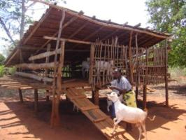 |
| Goat housing |
| (c) S. Fontana, BioVison
|
- Rain proof
- Damp proof
- Well ventilated
- Free from direct wind
- Free from sharp objects that might cut the goat
- Pest, wild animal and burglar proof
- Slats on floor for free fall of droppings
- With an area of at least 2m2 per animal
- Outside space for exercise, play and exposure to the sun during the day
Building specifications for dairy goats
Houses should be raised at least 1.5 feet (= 0.5 m or just below knee height) from the ground. A slatted wooden floor is very important. This has small gaps about half an inch wide (or the width of a side of a match box) between the planks or rafters. The gaps must be small enough for the adult goats or kids feet to not go through as this can cause serious injury. Use of local materials means you can use off cut planks, etc. To facilitate the cleaning, goat houses should measure 1,5 m x 1,5m x 1m high
| 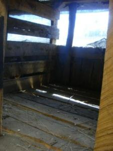 |
| A good ventilated goat house with a slatted floor measuring 5' x 5' x 3' high (1,5 m x 1,5m x 1m) |
| (c) S. Fontana, Biovision
|
Mud houses (for cold areas)
This is the cheapest house to build because it uses local materials such as posts, mud, rafters for floor, nails and grass for thatch roof. When placing mud, make holes in the wall slanting down so that the wind does not land directly on the goats.
Off-cuts house
This house costs a little more but it lasts longer. Building materials are posts, off-cuts planks, nails, iron sheets or grass for thatching, wood - rafters or planks for the floor.
House Partition (for zero grazing)
There are two main areas of the house, the sleeping area and feeding area. Sleeping area has wall right around with a door. It must be roofed with lots of air being allowed in (i.e. well ventilated). Feeding areas should be open and not roofed, to allow goats to enjoy some sun. It should be fenced right around with a door/gate provided. There is need to provide for feed trough/water area, place for handing fodder (feed racks), floor with slats to let manure fall through to keep feed and animals clean and dry; place to handle mineral block (where it cannot be rained on).
Feed trough. A goat does not like to graze on the ground like a sheep or cow. Goats like feeding at a knee high on the bush or goat house wall. Goats need to be able to drink fresh water at all times.
The feeding area is built 1 meter (3 feet) above the platform with rafters, off-cuts or timber. Troughs must be easy to clean. Floor of trough can be made of off cuts but must be able to hold hay. Feeding space is 35 cm at least per mature goat.
Water Trough. A water trough is placed 1 foot above the floor in the feeding area. Or a 5 litre can is hanged on the outside of the door to the sleeping room. The door should have a small window or a slot so that goats can have access to water day and night.
Kid pen (Zero Grazing). In the case of Toggenburgs and other dairy goats, they often give birth to twin kids so don't make the pen small. Kid pen should be for at least 6 kids.
Hay barn/store. It is important to store fodder, for use during the dry season. Hay barns are built adjacent to the goat house that is roofed and has a slatted floor to allow air to pass underneath. It is very important that the hay is not allowed to get wet, otherwise it will 'mould' and spoil and the goats will not eat it.
Mineral trough
Mineral trough should be made where the goats sleep, 1 foot square box is ideal for this purpose. A halved long plastic container nailed to the board, at least 1 foot wide can be useful. Or just as good - hang the salt so that goat has to reach for it.
| 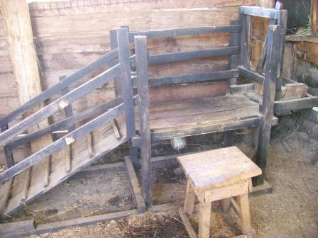 |
| Milking bale |
| (c) Val Corr, Naivasha, Kenya
|
| 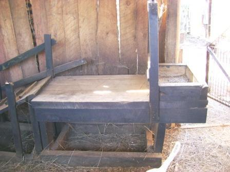 |
| Feed trough attached to milking bale |
| (c) Val Corr, Naivasha, Kenya
|
Milking parlour
Make a milking parlour where needed. Before milking clean the udder with a warm, wet cloth. The teats should then be lubricated with milking salve. Goats teats should NEVER be 'pulled' when milking. They should be gently squeezed. When you let go the teat will fill with milk ready to be squeezed again. If the teats are pulled the inner membrane will be damaged, resulting in a very painful and/or 'droopy' teat. This makes for much less efficient milking and is more difficult for the kid to suck from.
Nutrition - Feeding
Goats are inquisitive feeders and will walk long distances in search of food. Herbage is, therefore, an important par of their diet. This is a difficult requirement to meet in the case of zero grazing. Goats are browsers and eat variety of plants/feeds when left to find their own food. This ensures a balanced diet according to their individual needs. Goats are able to distinguish between bitter, sweet and sour tastes and show a higher tolerance for bitter tasting food than, say, cattle. They relish variety and will not thrive when kept to a single type of feed for any length of time, which is often the case when goats are kept in zero grazing situations. They enand plants. They tend to prefer to nibble at the shoots and leave the stems. Palatability appears not to be their main consideration. They look mainly for a variety of feeds.
The mobile upper lip enables the goat to browse a variety of plants to meet its nutrient requirements and up to 80% of their total intake may be taken as browse. When browse is not available they are, however, quite capable of utilizing grasses and other crop residues. A variety of grasses can be grown suitable for goats. They generally prefer the less coarse grasses such as Napier. Wild legumes are also a beneficial part of the diet.
Goats greatly benefit from a wide variety of tree leaves and make good utilization of woodland vegetation. Like all other animals goats need sufficient feed for:
- Maintenance of body weight and condition
- Production of meat/ milk (There will be very minimal production/ growth rate, unless the goats have access to more feed than they need for body maintenance)
Goats get bored when fed on the same feed every day. They are clean feeders and will not eat feeds which are not fresh and nor will they eat dirty feed e.g. Napier with mud splash from rain. Goats do not like sticky, mouldy, wet or dusty feeds.Goats need the same balanced ingredients as other creatures, only proportions vary according to the stage in the life cycle:
1. Proteins are needed for growth, production of meat and milk as well as reproduction. Proteins are found in:
- Legumes such as Lucerne, green beans (this is not advised *see following), cowpeas and other wild legumes (sweet potato vines, acacia leaves etc.
Note: It is not advisable to feed green beans or bean/pea hay. Goats have a natural clostridia content in their digestive system. Beans and legumes can increase this content to such an extent that it will become toxic. Symptoms area sudden, and death nearly always results (see diseases). - Dairy meal, cotton seed cake, sunflower cake, soy bean cake and other oil seed cakes (the 'cakes' should be fed sparingly)
2. Energy feeds (carbohydrates and fats) are needed for maintenance of body condition, fattening, all body functions, in general for anything to work. Energy feeds are for example:
- Grains such as sorghum, maize, millet, barley and wheat can be fed in small quantities. Green maize husks should be fed with caution. The carbohydrate and sugar content is very high, therefore very palatable. Especially in a dry period goats will gorge themselves resulting in 'Carbohydrate Engorgement'. The symptoms are very difficult to reverse, there is no treatment and mortality is very high. If caught very early it can be treated by a period of starvation, but success is limited.
- Grasses: Napier grass, Kikuyu grass, or any green grass
- Hay, dried grasses/weeds are an essential part of a goats diet, etc.
Table 1. Daily requirements of does with body weight of 50 and 70 kg in different stages of production for energy and protein, calcium and phosphorus and for vitamin A and E and the maximum dry matter intake capacity (DMI) of the does.
| Live- weight | Category | Daily Gain (g)
| DMI | ME M/cal
| Crude Protein (g) | Calcium g
| Phosphorus g
| Vit A IU
|
| 50 | Maintenance and early gestation | 0 | 1.2 | 2.6 | 100 | 4 | 2.8 | 1950 |
|
| Late gestation |
| 1.91 | 4.02 | 182 | 6 | 4.2 | 3050 |
|
| Maintenance and growth | 50 | 1.38 | 2.96 | 114 | 5 | 3.5 | 2250 |
|
| Maintenance and growth | 150 | 1.74 | 3.68 | 142 | 6 | 4.2 | 2750 |
|
| 1 kg of milk, 4.5% fat |
| 1.9 | 3.86 | 177 | 7 | 4.9 | 5750 |
|
| 2 kg of milk, 4.5% fat |
| 1.9 | 5.12 | 254 | 10 | 7 | 9550 |
|
| 3 kg of milk, 4.5% fat |
| 1.9 | 6.38 | 331 | 13 | 9.1 | 13350 |
|
|
|
|
|
|
|
|
|
|
| 70 | Maintenance and early gestation | 0 | 1.7 | 3.4 | 130 | 5 | 3.9 | 2550 |
|
| Late gestation |
| 2.41 | 4.82 | 212 | 7 | 5.3 | 3650 |
|
| Maintenance and growth | 50 | 1.88 | 3.76 | 144 | 6 | 4.6 | 2850 |
|
| Maintenance and growth | 150 | 2.24 | 4.48 | 172 | 7 | 5.3 | 3350 |
|
| 1 kg of milk, 4.5% fat |
| 2.4 | 4.66 | 207 | 8 | 6 | 6350 |
|
| 2 kg of milk, 4.5% fat |
| 2.6 | 5.92 | 284 | 11 | 8.1 | 10150 |
|
| 3 kg of milk, 4.5% fat |
| 2.7 | 7.18 | 361 | 14 | 10.2 | 13950 |
3. Fibre is needed to keep the rumen (stomach) in a healthy working condition. Fibre is found in all plant material. Old dry stems of plants (DO NOT use dry legume hay. The clostridia content of this is higher than green legume) are almost pure fibre.
Young green plants have less fibre and more nutrients. Ruminants such as goats can digest a large amount of fibre, but do need supplements, especially if all the available fodder has dried out. If goats get too little fibre they tend to either suffer from bloat or from indigestion (badly functioning stomach).
4. Molasses added to the water is much appreciated by goats. This can be given from a large bucket when the goats come in for milking. They should be allowed to drink from this freely. Molasses assists with the fermentation process that takes place in the rumen. Dairy goats carry very little fat, so it is important that there is good rumen action at night to keep them warm. Molasses is also an excellent source of vitamins and minerals.
5. Minerals
Minerals constitute an important part of the diet. Symptoms of mineral deficiency which, if ignored, could result in death and will definitely affect production. Minerals are needed for maintaining fertility, building body condition, keeping body functions healthy. Minerals are found in weeds, salt licks, etc.Excess in one or more minerals is also undesirable.
A number of minerals are essential and are classified into 2 groups - macro and micro elements. The macro minerals include: calcium, chlorine, phosphorous, potassium, magnesium, sodium & sulphur. The micro elements which are required in much smaller quantities are: cobalt, copper, fluorine, iodine, manganese, molybdenum, selenium and zinc.
There may also be a need for other trace miners such as barium, bromine, cadmium, chromium, nickel, selenium, silicon, strontium and tin.
6. Vitamins
Vitamins are essential food substances and are required in very small quantities. They are usually classified into 2 groups: fat soluble and water soluble vitamins.
- The fat soluble vitamins are: Vitamin A (present in plants), Vit D, D2 and D3, Vit. E and K
- The water soluble vitamins are: Vitamin B, B1 (thiamine) B2 (riboflavin), B6 (pantothenic acid, folic acid, biotin), B12 (cobaltamin), Vit C (ascorbic acid).
Most of the above are widely available in feeds and green leafy materials and in cereal grains. Some of the B vitamins are synthesized by the intestine microflora when cobalt is present. A practical way to ensure that vitamins and minerals in the correct amounts are incorporated in the diet is to feed them as supplements. There are many supplements available on the local market.
How much feed?
The amount of feed needed by goats depend on their size and stage of development. As a general rule of thumb, an animal will need 3,5% of its bodyweight daily in the form of dry matter in feed to satisfy its appetite. An animal will produce nothing and eventually die if its appetite is not satisfied. A 40 kg goat will thus need 1.35 kg dry matter per day or almost 500 kg in a year. Most FRESH forage contains about 33 % dry matter as an average. The 40 kg animal will then need 4 kg of fresh forage every day or its equivalent in dry forage and feed, which makes about 1500 kg per year.
The main difference between a goat and a cow or a sheep is that the goat has a much (delete) bigger rumen in comparison to its body size than the other two animals. The rumen of the goat can be as much as 1/3 of the total body volume. This makes the goat a very efficient converter of rough feeds/ browse, but the process uses up a lot of energy and there is also a need for minerals especially phosphorous. One reason goats prefer browse bushes and trees is that these plants are deep rooted and bring up many more essential minerals from deep inside (delete) the soil that the goat needs, than shallow rooted plants do.
Dairy goats are much more discerning browsers than other goats. They will graze, as a herd, on one particular food for a short period of time before moving on to a different plant. They do not, therefore, do nearly so much damage to the environment as other goats and it is rare, even in a drought, to see them strip a tree until they kill it.
In comparison to a cow, a goat
- Produces more milk from the same quantity of nutrients
- Uses less food per kg bodyweight for its body maintenance than a cow
- Uses more food per kg bodyweight for digestion and metabolism than the cow
In table 2 the maximum dry matter intake of different categories of goats are given. Also the average requirements for minerals, trace-elements and vitamins are given for those categories. Heavy goats (over 50 kg) have a somewhat higher daily intake and a higher mineral and trace-element need.
Table 2, Average daily mineral and trace element requirements for different categories of goat
| Category | kgDM | Ca | P | Mg | Na | K | Cl | S | Cu | Co | Mo | J | Zn | Mn | Fe | Se | Bc1 | VitA | VitD2 | VitE |
|
|
| g | g | g | g | g | g | g | mg | mg | mg | mg | mg | mg | mg | mg | mg | IU | IU | IU |
| young, pregnant | 1.6 | 3.6 | 3 | 1.6 | 0.6 | 7 | 1 | 2.4 | 18.6 | 0.16 | 0.16 | 0.5 | 26.7 | 72 | 100 | 0.23 | 7 | 2800 | 1250 | 38 |
| Pregnant | 1.7 | 3.7 | 3.2 | 1.7 | 0.7 | 7.3 | 1 | 2.55 | 20 | 0.2 | 0.17 | 0.5 | 28 | 68 | 92 | 0.17 | 7 | 2800 | 1250 | 38 |
| 2 kg milk | 2.7 | 6 | 8 | 3 | 2.1 | 17 | 7.4 | 5 | 27 | 0.25 | 0.25 | 0.5 | 60 | 98 | 28 | 0.3 | 30 | 12100 | 2330 | 43 |
| 3 kg milk | 2.7 | 8 | 10 | 3.8 | 2.7 | 21 | 8.6 | 5.4 | 31 | 0.27 | 0.27 | 0.5 | 66 | 108 | 29 | 0.3 | 33 | 13100 | 2630 | 45 |
1) beta-carotene is a precursor of vitamin A and is able to form about 400 units of vitamin A per mg. Plants contain beta- carotene, not vitamin A.
Milk goat feeding
Feeding the dairy goat after kidding: The doe requires sufficient food to feed her kid and to maintain her own weight She can be supplemented with at least 200 gm/day of dairy meal. Ration can be reduced to 100gm/dax during the 3rd month after kidding.
The diary goat gives as much milk as it is given the right food. Some preferred feeds include:
- Sweet potato vines: This is liked very much by the goats. It gives tubers for the family to eat and the vines can be fed to the goats. It can be planted beside riverbeds, steep parts of the shamba and on road side edges. Useful in feeding kids whose mothers died early in their life.
- Napier: Napier can be planted along river beds, soil terraces or road reserves. Where a farmer has a big shamba, Napier is planted near the home to save time for other work while tending to the goats. Good Napier needs generous application of manure and needs weeding. Where new fields are being planted mixed cropping with desmodium improves the quality of the fodder. If you plant napier around your maize, it stops maize stalk borer.
- Fodder trees and legumes: These have lots of protein and only a little is needed at a time. The trees and legumes should be planted along the fences and terraces. Leucaena is good in fences. They do not need a lot of work once they are planted. Desmodium: when available should be inter cropped with Napier. Calliandra does better in high altitudes (tea zone 3) than leuceana. Do not forget many weeds also make good fodder.
Maize: While maize is grown for farmer's food, there is a lot of fodder which can be used for feeding the goat without stopping the Farmer from a good maize yield. Thinning - all the extra maize seedlings that grow from the same seed hole should be thinned and dried a little before feeding to the goats. Remove extra leaves - this should start with the leaves below the cob as soon as the cob can be seen. Cutting the tops - this should start after the grains have hardened. Stovers - these should have sweeteners (molasses) added or sprinkle common salt after chopping. Broken grains - these are very nutritious especially after a heavy harvest but should be fed carefully to avoid grain overload. (Carbohydrate Engorgement) Dry feed intake in the tropics is around 4 - 5% of live weight. Where goats have several functions the intake of dry matter is relatively higher than for dairy goats.
Rolled Barley: Rolled barley should never make up more than 25% of the ration as too much can be poisonous to goats.
Dairy Meal: For heavy milkers this should make up 3/4 of the ration with bran added. There are many different varieties on the market, some of which are much superior to others. Make sure that the meal has a pleasant smell and texture.
Recommended feeding for lactating does
During this period pregnant does are housed in large pens. Towards the end of pregnancy individual does can be confined to pens where the kids are born. Where the floor is made of timber (it should be slatted) or concrete (not recommended) it is advantageous to increase the amount of bedding so that the doe is comfortable.
| Concentrates 16-18% protein | 0.3-0.8 kg/day |
| Grass with legumes (fresh) | 1.8 - 2.5 kg/day |
| Grass/grass mix (fresh) | 2-3 kg/day |
| Grass/grass mix (dry hay) | 0.7 - 1 kg/day |
| Grass with legume (dry) | 0.6 - 0.8 kg/day |
The dairy goat has enormous potential for converting roughage as a means of making milk. Her capacity, relative to her size, is far greater than that of a cow. Use should, therefore, be made of this ability to use roughage. A stall fed (zero grazing) milker will astonish the owner for her constant demands for more food. Therefore, good hay is a very important part of her diet. Zero Grazing dairy goats require the same hay and concentrates with added green fodder. The feed requirements of the lactating doe are much greater than it is during pregnancy and the provision of better quality feed during lactation is essential. Feeding during lactation is the primary influence on initial and total milk yield.
Access to water: It is VERY important that the lactating doe has access to plenty of clean drinking water. This is essential for a good milk yield.
Weaning can be done at any time up to 6 months. Time of weaning depends on the type of doe. Does reared for meat feed their kids for longer; weaning is delayed and the kids usually run with the doe for 3 months.
Early weaning is more common for dairy does and usually kids are separated after birth. They MUST be allowed to feed on the colostrums for 3 days. It is important that the kids must be allowed sufficient milk to satisfy them in order that good growth is ensured. Maintaining a suitable weaning schedule assumes that there will be control over the breeding animals at all times. In many parts of East Africa, however, especially under extensive management conditions, this is not always possible. More efficient husbandry would improve the system. The kids usually begin to nibble at solid food such as leaves, grasses and dry food at 2 - 3 weeks. This stimulates rumen activity. At this time the kids show increasing activity and they require space for exercise and plenty of access to sunlight.
Water is needed for survival. Lack of water will kill an animal faster than lack of any other food constituent. Goats are efficient water convertors. They have a low rate of water turnover per unit of body weight. Ample quantities of water are essential for high milk production and for maximum growth and mohair production. The water requirements for meat animals, while still essential, are relatively less. The demand for water increases in the dry season when ambient temperatures are highest. Goats pant less than sheep, they do not sweat and lose less water in their feaces and urine. When water intake is low the excretion of urine is reduced. In EA it is thought that tolerance to heat stress is due to the resistance to the absorption of radiant heat by the shiny coat, reduced water loss in urine and faeces and increased ventilation.
After birth the most rapid gains are during the first 4 - 6 months. High birth weights are, therefore, important. Female Toggenburg kids reach 50% of their mature weight by 4.5 months. By comparison Saanen kids reach 50% of their mature weight by 8 months. It is, therefore, essential that kids management is of a high standard if their full potential is to be reached. Nutrition definitely has a significant effect on the growth performance of growing kids. If light weight kids are managed properly and fed sufficient milk through the first three months, there should be no difference between it and it's heavier siblings.
A sufficient intake of energy and protein is required for good reproductive performance. This will encourage sexual maturity and conception, and ensures a smooth pregnancy, resulting in kids of high birth weight and strong constitution.
Goats are efficient digesters of coarse feeds. However, unless concentrate feeds are relatively cheap, and justified by increased milk production, there will be little profit in feeding concentrates. Good quality legume hay such as Alfalfa (lucerne) and pigeon peas are valuable and should be used where possible. When these feeds are not available a concentrate of 16 - 18% crude protein is required, especially when grass is the only ration. Other products such as sweet potato vines, ground nut (peanuts) vines and tree leaves are good fodder.
A list of feeds and the energy, protein and chemical composition is available in Animal nutrition and feed rations
Health and Diseases
If animals are well fed, well watered and well managed disease is rarely an every day problem. Goats are generally tough and resilient. Problems come when a farmer begins to expect greater production from his animals by crossing them with exotic breeds. More intensive management is required the more an animal is expected to produce, and this management does not depend on sticking needles in animals. A good goat manager will know the requirements of his/her goats and take great care that their needs are well taken care of. A healthy goat has
- a smooth shiny coat
- bright eyes
- good appetite
- easy quick movements
- will rest and chew cud regularly
- will pass normal feaces and urine (color and consistency can change with change in feeds)
- normal body temperature of 40degC (+- 1degC) higher in the morning than in the evening.
- normal respiration rate of 12-15 breaths per minute (faster in kids).
Diagnosis of sick animals
The early awareness of sickness in animals is important to successful treatment. The longer an animal is sick the more difficult it will be to cure. Early signs of sickness:
- Stops eating and possibly also drinking
- Becomes dehydrated
- The temperature rises
- Respiration rate increases
- The animal becomes dull and lags behind the others
- The coat becomes rough and looses its shine
Always observe a sick animal before rushing into conclusions. Take its temperature, look for outward signs such as coughing, wounds, diarrohea etc.
Dehydration (lack of liquid in the body) can kill the animal, so the first thing is to provide the animal with shelter and plenty of clean drinking water. Then the sick animal needs energy to fight off the disease. A thin porridge made with any clean grain flour and boiled up with a bit of salt, sugar or honey and cooled is a good supplement to feed a sick goat.
Depending on the size of the goat they can be given up to 4 bottles a day at regular intervals. Alternatively make a rehydration solution from 1 liter of boiled water, 4 tablespoons of honey or sugar and 1 teaspoon of salt and give as a drench. A sick goat will respond better to treatment in the company of another goat. In the case of constipation a very simple remedy is 1 egg / 250 gr sugar beaten well together and fed slowly to the goat with a syringe. If symptoms persist, consult your vet.
Feeding sick goats
Feed goats well when ill. Good feeding will give strength. Small, weak, young and sick goats should be fed separately. Follow the best way to feed goats carefully and handle them gently. Diseases and parasites are one of the main constraints to goat production in Africa. In addition, diseases and parasites reduce the condition of goats, severely affecting overall production. Disease, parasites, low nutrition, poor management, lack of sanitation and hygiene affect the health and performance of goats. Poor feeding and management reduce the resistance to attack by disease and parasites.
Goat diseases
Listed below is a brief account of the more important aspects of goat diseases. Farmers should seek veterinary assistance whenever in doubt about appropriate prevention and control.
for more information see here
Also known as goat plague or rinderpest. This is a serious viral infection. The clinical symptoms and PM results resemble those in cattle with rindepest. The infection has a 4-5 day incubation which is followed by pyrexia (high fever) lasting 6 - 8 days. The spread of the infection is primarily respiratory, through nasal execution. Mortality is high within a week and the disease can be followed by secondary pneumonia. Kids are much more affected than adults.
Symptoms:
- High fever
- Oral necrosis
- Catarrh
- Nasal discharge
- Diarrhoea
Prevention:
- Annual inoculation
- Slaughter of infected and exposed animals
- Restriction of animal movement to control spread
Treatment/Control: No effective treatment.
2. Contagious Caprine Pleuro- Pneumonia (CCPP)
for further information see here
Contagious caprine pleuro-pneumonia, or CCPP, is a highly contagious respiratory disease. Infected goats infected become very sick and often die. The disease is caused by two different Mycoplasma bacteria (Mycoplasma capricolum capripneumoniae - also known as Mycoplasma F-38 and Mycoplasma mycoides var. capri). Transmission is by droplet infection from nasal discharge, especially if goats are confined. The mortality rate can be 100%.
Prevention:
- Quarantining for several weeks any animals coming new to the farm before introducing them into the herd, especially if the goats came from countries known to have the disease.
- Thorough cleaning and disinfection of the premise
- Slaughter of infected and exposed animals
- Restriction of animal movement to control spread
Treatment/Control:
- Contact your veterinary immediately
- Antibiotics such as Tylosin and Baytil can be used.
- Vaccination is the best control.
3. Pneumonic pastuerellosis (PP)
Caused by two Pasteuerella micro organisms (p haemolytica and p. Multocida type 11). It is spread by droplet infection and outbreaks are usually sporadic. The clinical symptoms are similar to those in CCPP. The disease seems to be triggered by stress and as a result is often referred to as 'shipping fever' as the disease often manifests itself after transportation.
Treatment/Control:
- Yearly vaccination
- Elimination of stress factors in the management and handling of animals
- Antibiotics such as Tylosin and Baytil can be used
4. Haemorragic Septicaemia
A particular strain of pasteurella multocida. Type 1 is the case of Haemorragic Septicaemia. Animals under stress are particularly susceptile. It is spread by carrier animals by droplet infection. Virulence increases after rapid passge through a number of animals.
Treatment/Control:
- Antibiotics such as Tylosin and Baytil can be used.
- There are several vaccines on the market which can provde up to 2 years immunity. Vaccine should be administered 2 months before stress (i.e., transport) or just prior to the rainy season in humid areas.
5. Foot and Mouth Disease (FMD)
for further information see here
FMD affects all cloven hoofed animals and is prevalent throughout East Africa. The disease is transmitted by direct contact or by material contaminated with discharge lesions. Incubation 3 - 8 days.
Symptoms:
- Salivation and foaming at the mouth.
- Formation of vesicles (blisters) in the mouth, feet and liver.
- The feet are painful thus movement is restricted. For the same reason the animal finds grazing and eating difficult.
Treatment/Control:
- Since the disease is spread by contact with infected animals, every precaution should be taken to minimise contact. Movement should be prohibited and foot baths should be used on infected farms.
- Vaccination is highly recommended at the onset of an outbreak. However, the vaccine is not always readily available.
6. Orf
for further information see here
A viral infection spread by droplets and saliva. Symptoms similar to FMD but not as serious. Lesions on mouth and nose. In severe infections lesions can spread to genitals. Infection in well fed animals usually disappears after 3-4 weeks. Mortality rate: low but growth and productivity affected due to painful feeding.
Treatment/ Control:
- No effective cure known.
- Vaccinate at first signs of outbreak
7. Coccidiosis
for further information see here
The disease occurs primarily in intensive units where adults and kids are housed together. The disease seldom occurs under extensive and good management.
Symptoms :
- Foul smelling diarrhoea (with no blood).
- Temperature rises and there is no interest in food.
Prevention/Control:
- Administrate Sulphamezathine for 5 days.
- Isolate infected animals
- Effective sanitary measures are essential. Infected stalls and feed pans should be thoroughly disinfected and rested for 24 hours before reuse.
8. Anthrax (Miltsiekte)
for further information see here
The disease is caused by the bacterium Bacillus anthracis (similar to botulism). Acute death without any symptoms. NEVER OPEN THE CARCASS. This will spread the disease which is HIGHLY CONTAGIOUS, even to humans. Disease is spread by water and food contamination with blood and excretions or by wound infection (puncture wounds by thorns). Incubation period 1-3 days.
Symptoms:
- High fever, shivering and trembling, sometimes diarrhoea. Sudden death
- Rapid bloat and decomposing of the carcass.
- Rigor mortis DOES NOT occur. After death, blood appears at the natural openings (nose, anus etc., )
Treatment/ Control:
- No treatment as disease is noticed too late.
- The best prevention is annual vaccination if there are known cases in the area during the previous 5 years.
- Do not let animals graze near the infected area.
- NOTIFY THE VETERINARY DEPARTMENT IMMEDIATELY. This is a notifiable disease.
9. Clostridial diseases
Tetanus (Lock jaw)
for further information see here
The caused by a neurotoxim produced by the Clostridium tetani bacterium. Spores enter the body through wounds (i;e., following castration, ear tagging, thorns and puncture wounds etc., ) The toxin affects the central nervous system producing symptoms including: erect ears, elevated tail, extended neck, standing with forelegs and hind legs extended. The animal cannot eat or drink, is sensitive to any light touch, sharp noise or bright light. Animal may lie down on its side with stiff limbs stretched out and off the ground. Mortality is high and, even if an animal recovers, their productive life will be severely impaired. Recovery is very much dependent on the standard of care of the sick animal.
Prevention/Control:
- Keep the animal in a dark and quiet place.
- Treat the animal with penicillin.
- Animals should be vaccinated before kidding, then annually.
- Infection is always caused by hygiene (i.e, puncture wounds, castration etc.). Disinfect any and all wounds. Castration with elastic bands should be used with caution.
- Infected carcasses should be handled with care and incinerated.
Black Quarter
Caused by the Clostridium chauvoei bacteria. Symptoms include fever, loss of appetite, stiffness and swelling of affected area. Initially the swelling is hot and painful, but soon becomes cold and painless. Overlying skin becomes dark. Treatment should commence as soon as symptoms commence. Mortality is high and occurs within 24-36 hours.
Treatment/Control:
- Treat with penicillin or oxytetracycline (usually unsuccessful).
- Disease is almost always the result of infection of a wound caused by management practices (castrating etc., and environmental causes (thorn punctures).
- Vaccination annually (vaccine may not be readily available).
- Hygiene is very important.
- Carcasses should be handled with care and incinerated.
Enterotoxaemia (Pulpy Kidney Disease)
Caused by Clostridum welchi. An acute, often fatal disease, affecting goats of all ages (often those that appear fittest succumb). It is an epsiton toxin produced by bacterium clostridium perfringens type D. The onset is usually very rapid. Animals may be normal in the morning but dead by nightfall. Whilst the clostridium bacteria is present in the intestine of all goats, given favourable conditions (i.e., high levels of grain or carbohydrates) it can grow rapidly, resulting in toxicity (the disease is sometimes referred to as 'carbohydrate engorgement').
The main danger is the first few days after a change in diet (i.e., poor to rich pasture or the sudden addition of high carbohydrate food such as green maize husks.. PM will indicate a rumen packed with undigested carbohydrates and fluid throughout the gastric system. After death fluid may be seen to pour from the nose and mouth. The disease is nearly always fatal and symptoms are almost impossible to reverse.
Prevention / Control:
- Vaccination annually
Botulism (Lamsiekte/gallamsiekte)
Caused by clostridium botulinim bacteria;. These bacteria form spores which occur in the soil and can lie dormant for many years. Make sure animals do not suffer from mineral deficiency or show signs of pica (animals start eating soil or bones, as these can harbour the spores). Infection in well fed animals usually disappears after 3-4 weeks Symptoms:
- Lesions on mouth and nose. In severe infections lesions can spread to genitals.
- Stiffness of the limbs noticed in leg and neck muscles followed by partial or complete paralysis of all muscles.
- Tongue may protrude. In less acute cases animals have difficulty feeding and drinking.
Prevention:
- Annual Vaccination is the best prevention (especially if animals are fed with chicken litter).
Treatment/control:
- No treatment.
- Carcasses should be handled carefully and incinerated
Brucellosis
for further information see here
Brucellosis is not common in goats. It is a particularly dangerous infection as it can be transmitted to humans through milk. Brucellosis is caused by one or ore variants of Brucella bacteria of which B. melitensis is particularly important. Contagious abortion may result. The infection remains and the aborted does will not breed.
Prevention/ Control:
- Vaccination of male goats at weaning is recommended.
- Males should be tested for diseases before introduction into herd. DO NOT vaccinate female goats if they are pregnant as this may cause abortion. It renders bucks sterile
- Remove infected animals from the herd.
Caseous lymphadenitis (Cheesy gland disease/pseudotuberculosis/absesse)
The cause is Corynebacterium ovis bacteria. The symptoms include development of one of more abscesses in the lymphatic glands.
Prevention:
- Animal vaccination (not readily available in East Africa)
- Good herd hygiene.
Treatment / Control:
- Open mature abscess with a clean scalpel or knife on a soft spot. Squeeze the puss out of the abscess and collect it in a tin or plastic bag (DO NOT leave it lying around. Burn it or discard it where animals and humans cannot come into contact with it.). Flush the empty abscess with hydrogen peroxide, followed by a flush with a solution of salt water. Fill the empty abscess with Iodine or Betadine and spray with a disinfectant spray (gentian violet is excellent)
- No other adequate control treatment.
Mastitis
for further information see here
Both acute and chronic forms may be encountered. The disease is caused by different types of pathogenic bacteria but Staphylococcus and streptococcus agaiactiae are common. Generally caused by bad hygiene and poor management at milking time. Infected does have swollen, hot udders (sometime only part of the udder is affected). It is extremely painful and, if left untreated, further serious complications may follow and milk production will be impaired. Severe cases can be fatal if left unattended.
Prevention/Control:
- Absolute cleanliness at milking is essential.
- Infected does, after stripping the milk, can be given infusions of streptomycin or terramycin creams through the teat (not as effective) .
Hypocalcaemia (Milk Fever)
for further information see here
All milk goats suffer a fall in levels of blood calcium and phosphorous at the start of milking. In some instances the fall of blood calcium is so great that milk fever is the result. It is commonest in young does and high yielding first kidders, but it can occur in late pregnancy, during kidding and at any stage of lactation especially in high yielders. Milk Fever may occur soon after kidding. Symptoms include loss of appetite followed by restlessness, excitement and trembling. Inco-ordination will be followed by coma.
Treatment:
- Seek veterinary assistance immediately
- Affected does need 80 - 100 ml calcium boroglucomate with magnesium and phosphorous injected subcutaneously.
Transit Tetany
Can occur in milkers, dry does and male goats. It is caused by a combined deficiency in calcium and magnesium cauised by stress i.,e fear and transport.
Signs and treatment as in milk fever.
Problems Associated with Kidding.
Abortion . Abortion is a premature expulsion of the foetus. This may be caused by specific infections i.e., toxoplasma, Chlamydia and campylobacter, or as a result of a general infection. Most abortions, however, result from non infection causes such as stress (transportation or chased by dogs for example), or by drugs such as prostaglandins (steroids) poisons, malnutrition and, sometimes, where there are multiple foetuses present. Gloves should always be worn when handling aborted tissue. Pregnant woman should NEVER handle aborted tissue. Seek veterinary assistance on any abortion.
Vaginal Prolapse. This is the protrusion of the vagina through the vulva caused by response to excess abdominal pressure. It is more common in multiple births. It can also be hereditary. Seek veterinary assistance immediately.
Mummified Kids. Muffified kids are produced if the kid has died in the womb for any reason. It is not uncommon to have normal kids produced with a muffified kid. These are sometimes retained for some months and then expelled as bits of bone and tissue. If kids are left behind this may cause infertility, serious infection or even death.
Uterine Prolapse. This is when the entire uterus is expelled via the vagina. It is a rare condition, occurring soon after kidding and may be subsequent to a retained placenta. Seek veterinary assistance immediately. In the meantime, keep the doe warm to prevent shock and keep the uterus as clean as possible (wrap it in a clean cloth).
Vulval Discharge. An odourless, reddish discharge (lochia) is normal for up to 14 days post kidding. If the discharge is darker and stickier than normal, or if it contains pus (indicating metritis) or if the goat seems unwell or is milking poorly, seek veterinary assistance immediately.
Retained Placenta. The foetal membranes should be expelled within 12 hours of kidding. Seek veterinary assistance if the placenta has not been seen. An ignored retained placenta will, nearly always, result in death.
Ovarian Cysts. Cystic ovarian disease in goats is an important cause of reproductive failure. The disease shows itself by short cycles with continuous oestrus (going on with heat) without conception. When the goat is in season it will bleat (make noise) a lot and show nymphomaniac behaviour (wanting to mate all the time).
Cycstic ovarian disease has been proved to be linked to animals that grase clover and legumes in large quantities.
Prevention/Treatment: 1500 - 2500 iu humanchorionic gonadrophin (a drum which not readily available in East Africa). An alternative treatment is prostaglandin F2alpha which is available in most agrovet shops.
Malpresentations. These are not beyond the capabilities of a good stock manager. Clean your hands thoroughly and, holding your lubricated fingers in a cone shape, insert them gently into the birth canal and when you know what part of the kid is being present, gently manipulate the kid so that it's head is resting on the two front feet. This may require gently pushing the kid back into the uterus in order to make more room for the manipulation. If the head is not visible the body of the kid needs to be pushed back until the head can be dropped into the correct position. Natural bath should follow.
Nasal Bot. Caused by flys which lay eggs in the nasal cavity. The maggots move into the sinus cavities. Symptoms include coughing, thick whitish mucoise discharge from the nostrils. The most effective treatment is Multidose available in most veterinary pharmacies. Some anthalmintics include nasal bot.
Treatment / Prevention: The best prevention is control of fly and breeding areas (damp dark corners - such as under water buckets are preferred .
Rift Valley Fever (Ensootic hepatitis/RVF). for further information see here
This disease is rainfall related and spread by mosquitoes (Bunyavirus). The onset of symptoms is fast. They include high temperature, stiffness, tremors and distress. Adults abort. Mortality can be high. No treatment .Vaccination is recommended at the first sign of an outbreak. (once per animal - lifelong immunity. However, vaccine is not always readily available.
Heartwater (Rickettsiosis). for further information see here
Caused by Cowdria ruminantium (Rickettsia).spread by the Bont tick. Symptoms include loss of appetite, listlessness, rapid breathing followed by muscular tremors, circular movements, grinding of the teeth. Recovering animals show diarrhoea. Immune animals show slight fever. Mortality rate: Very high especially in young stock however, this disease is seldom seen in goats. Disease agent: A parasite by the name Cowria ruminantium spread by the bont tick.
Prevention: Weekly dipping or spraying with recommended acaricides to kill the ticks spreading the disease.
Treatment: Administration of a broad spectrum antibiotic can be effective if disease is caught in early stages. Treatment should start as early as possible, prefereably before the nervous symptoms occur. Antibiotics such as Oxytetracycline can be used. Do not import animals from a heartwater free area into a heartwater area without vaccination.
Trypanosomiasis
for further information see here
Only seen in areas of EA where the Tsetse fly is present. Caused by infection by the Tsetse fly. Symptoms include: yellow membranes and gums, lethargy, high temperature, reluctance to eat. Control by using 'pour ons' such as Typertick. Treatment for sick animals - Samarin. Consult your veterinary officer
NB: Where vaccination is recommended, various factors have to be taken into account such as area, the diseases which occur in your area and the management system. It is adviseable to vaccinate a month prior to kidding so that the immunity can be passed through the placenta to the unborn kid. Some of the above mentioned diseases are more prevalent during the rainy season. It is therefore, where appropriate, to vaccinate before the rainy season commences. If in doubt always consult your veterinary officer.
Foot Rot
for further information see here
Mainly caused by Fusiformis nodasus. Caused by continuous grazing or being housed on wet pasture/bedding. Not fatal but causes serious loss of production as the animals movement is restricted as their feet can become very painful. In extreme cases animals may not be able to move at all.
Prevention / Control : Hygene management is essential to avoid Foot Rot. The affected are of the foot must be well washed with a formalin solution / or copper sulphate. Foot rot spray should be applied until the infection is cleard. Avoid grazing /bedding animals on continuously wet pasture/housing and avoid stagnant water. Regular foot care is a good prevention.
Helminths (worms) are probably the most damaging parasitic infection in goats. Larvae build up in the herbage during the rain season. The extent of the infection will depend on the method of grazing management. Rotational grazing can help reduce the incidents of infection. A variety of helminths aaffect goats and include nematodes, cestodes and trematodes. These include Haemonchus contortus(barber pole worm), liverfluke, roundworms, lung worms, tape worms, etc.
Symptoms: swelling under the jaw, loss of body condition, dioarrhea, pale gums, thick nasal discharge, signs of worm presence in faeces.
Nematodes, cestodes and trematodes
Heamonchos contorous infection is greater in young animals. The critical period is up to 4 weeks of age. Pregnant does should be treated prior to birth and young stock should be treated by 2 weeks. Adults of the major intestinal parasites live in the animals gut where they mate. The eggs pass out with the faeces onto the pasture. When conditions are suitable the larvae hatch and are then ingested by grazing animals.
Prevention/Control: The control of infestation calls for good livestock management. Well fed stock suffer less than do poorly fed animals. Control is achieved by regular drenching with broad spectrum anthalmintics. There are a wide variety available and it is therefore adviseable to alternate to ensure that all helminths are covered. Keep goats in clean houses or bomas to avoid build up of a worm infestation. Routinely dose adult goats before mating, all kids at weaning and all stock before each rainy season. Alternate brands to avoid immunity to infestation. Keep goats in clean houses or bomas to avoid build up of a worm infestation. Routinely dose adult goats before mating, all kids at weaning and all stock before each rainy season. Alternate brands to avoid immunity to infestation.
Bloat
for further information see here
Most often occurs when animals consume large quantities of grain or very green matter, especially in a dry season. Changes in feeding of grains and concentrates should be done gradually. Acute cases of bloat can follow the feeding of large amounts of dried alfafa leaves. If animals are eating lush leguminous feed they should have access to plenty coarse roughage.
Control / Prevention: Use 'Stop Boat' at 1 ml per 40 lit in the water at the first signs of boat or if there is a sudden 'flush' in the grazing following a prolonged dry period. Use for at least a week.
External parasites
Such as ticks, fleas, lice and mites, are dealt with by routinely dipping or spraying animals with recommended acaricides. External parasites transfer diseases between animals by sucking blood and should be kept firmly under control. When fleas and/or lice infest goats it should be dealt with promptly to avoid secondary infections of the skin, mange and, in serious cases, anaemia, all of which have an adverse affect on the welfare and milk production.
Tethering
Goats should NEVER be tethered by a leg. Always tether from the neck. This can be done by tethering to a peg allowing the goat to graze freely in a circle. Care must be taken that the tether does not wind round the peg continuously, preventing the goat from moving freely. Alternatively, the tether can be on a ring onto a ?picket line? or wire tide between two posts or trees. This allows the goat to move up and down the wire. Care should be taken that the tether is not so long that it can wrap around the goats neck or so short that the goat cannot move freely or lie down. Fresh water must be available to tethered animals, and where possible, shade should be available.
Management of Breeding Bucks
Male goats are fertile at an early stage and, consequently, it is usual for them to be managed separately. Bucks exude capric and caproic acids in their coat, which can contaminate milking buckets and cause odours in the milk. It is advisable, therefore, to house the bucks separately. The buck must be kept in good condition and fed adequate amounts of feed. An underfed buck will become sluggish. Exercise is important and provision should be made, where possible for them to have access to a yard.
Ear Marking
When this is done at weaning it causes least interference. Two types of ear marking are generally practiced:
- Tattoo: The usual method of tattooing is when tattoo marks are pierced on the inside of the ear and rubbed with Indian ink. The imprint lasts for a long time.
- Tags: Ear tags can be clipped on the ear of the kids. The tags are made of metal or plastic and individual goats identities can be printed on the tags. The tags often fall off so that this is not the most reliable method.
Other Methods: Paint or ink can be used to mark the side of the animal. This has the disadvantage of not being permanent and of possible damage to the skin. A string or cord bearing a tag can be placed round the neck of the animal but the tags fall off easily, particularly if the string is not of good quality.
Castration
Goats are castrated when they are surplus to breeding requirements and destined for slaughter. Castration of male goats eliminates odours in the meat, rendering it more palatable. The following methods of castration are practiced usually at weaning when the animals suffer least.
- Knife: this is a crude method and is NOT to be encouraged. The testicles are removed with a knife. It is IMPORTANT to use disinfectant to seal the wound. Care should also be taken not to include the two tiny 'teats' near the base of the testicles.
- Searing Iron: A searing iron, heated either by burning in the fire or in an oxy-acetylene flame is gently used on the scrotum. The heat also seals the wound and prevents any entry of germs. The kid needs to be restrained and help upside down during this operation. It should be noted that both above are extremely painful and stressful to the kid and should be avoided where possible.
- Bloodless Castration: Two techniques are employed here:
- Use the Burdizzo castrator which crushes the spermatic fords.
- Use of rubber rings. Tiny rubber rings about 1 cm in diameter are placed over the scrotum of the male kid. The pressure of the rubber ring in association with the growth of the kid restricts the blood supply eventually causing the testicles to dry up and fall off. When this happens it is important to check that there is not an open wound.
Products from goats
Efficiency of production in farm animals is defined as product per unit of food eaten by the animal. Unfortunately, it is not easy to calculate this in a way that makes comparison between different conditions and breeds. The following formula gives some measure of efficiency:
Efficiency (E) = (Product (P) : Food (F)) x 100
Where E is the efficiency, expressed as a percentage, P is the produce and F is the food intake.
Within species, efficiency of weight gain falls gradually as an animal grows. However, if animals of the same species, but of different mature size are compared at the same stage of physiological development, they appear to have similar efficiencies of weight gain. Thus faster growing larger breeds may not be more efficient than slower smaller breeds. It is possible to make adjustments for differences in mature size, so that percentage growth rates can give and indirect assessment of the efficiency of meat production rather than absolute growth rates.
The efficiency of growth can be affected by seasonal fluctuations of feed supply. Usually if an animal eats more it is likely to grow faster. Fluctuations in feed supply may cause live weight loss followed by compensatory live weight gain such as is often found when goats are grazed. Compensatory growth in goats has not been adequately studied, but it is not necessarily inefficient and farmers can take advantage of it. Faster growing goats are more efficient in energy storage but may be no better in protein storage than slower growing goats.
The food eaten by the dairy doe will include allowances for maintenance, pregnancy and lactation. In East Africa large litters are only feasible if the food supply is adequate. Extensive systems of grazing or conditions where the nutrient requirements of twin or triple births cannot be met are, therefore, disadvantageous. Most intensive rearing systems can meet the extra feed requirements.
The efficiency of milk production relates to the question of the efficiency of goats as compared to other lactating ruminants such as the dairy cow. It is known that dairy cattle produce more food energy than beef cattle. A high yielding cow will generally appear to be more efficient than a low yielding goat. Alternatively, a high yielding goat will be more efficient than a low yielding cow. Efficiency of milk production in goats is affected by persistency, feed utilization and feed conversion efficiency. Goats have a flatter lactation curve and peak yields are reached between 8 - 12 weeks of lactation. Alternatively cows hae a maximum milk yield between 4 - 6 weeks. This suggests that goats are more persistent milkers.
Goats also produce a relatively higher milk yield per unit of live weight compared to a cow. The relatively higher milk yield in the goat is due to the relatively larger mammary gland and volume of secretory tissue comprising a greater proportion of the total body weight.
A high yielding animal converts feed to human food efficiently. Animals that yield more milk or grow more rapidly will be more efficient, largely because the maintenance overheads are spread over a great volume of production. This is true of any kind of feed but the farmer will wish to establish which feed gives the best performance.
With goats the large daily intake of feed and larger production of milk per unit of body weight are functions of a higher metabolic rate related to body size.
The most important criteria for successful goat production are the efficiency and yield of protein produced from meat and milk. It is well known that in cattle the yield of milk protein is superior to that of meat protein. This is because the efficiency compares the relative yield of protein in various meat and milk animals. The yield of proteins from indigenous goats is approximately 7 times and for exotic goats about 39 times that from meat goats. On a per hectare basis the results are high and even more striking.
The yield of protein from goats compares with similar yields from indigenous dairy cattle. This implies that the dairy goat rather than the diary cow may become more useful for milk protein production.
Milk products from dairy goats is more advantageous by the availability of offspring (mainly males that are not required for breeding) for meat production. These considerations clearly indicate that milk protein production is an important contribution.
Goat meat is the most important product from goats in East Africa. It is widely consumed. The colour of goat meat is usually dark and it is somewhat coarse in texture. The fat content is usually sparse and fat is yellow in colour. The sparse covering of fat on the meat and the tendency for the fat to be concentrated more on the viscera is one of the characteristics of the species. There is often a strong odour especially in the meat of uncastrated male goats. There is little or no processing of goat meat in East Africa. The meat is, generally, consumed where it is produced or sold in markets by butchers for immediate consumption.
Goat milk is widely consumed throughout East Africa. The daily yield of milk per doe varies between breeds and locations due to various environmental effects, but even a small supply is important in many regions where there is both continued under nutrition and malnutrition. The chemical composition of goat milk varies with the individual, breed, stage and order of lactaion, season and nutrition. Whilst the size of fat globules in goat's milk is of the same order as in cow's (1-10 iu m diameter) the content of small globules is greater.
Goat milk also has relatively higher contents of fatty acid. Goat milk is a valuable source of aminoacids, is rich in histidine, aspartic and acid and tyrosine compared with cow's milk and has a larger amount of non protein nitrogen. The nitrogen content of colostrum is higher than that of whole milk.
The sodium, iron and copper contents of goat milk are relatively high. Goat milk has a higher content of Vitamin A, nicotinic acid, choline and inositol compared with cow's milk but lower amounts of Vit B6 and ascorbic acid (Vit C). An important feature of goat milk is that, unlike cow's milk, it contains no precursors of Vitamin A, the vitamin being present intact.
Composition of goat milk compared to indigenous cow milk:
| Constituent (%) | Goat milk | Cow milk |
| Total solids | 13.9 | 13.5 |
| Fat | 4.8 | 4.8 |
| Protein | 3.7 | 2.8 |
| Non fat solids | 9.1 | 8.1 |
| Ash | 0.85 | 0.74 |
| Lactose | 5.0 | 4.6 |
Vitamin content of goat milk compared to milk of indigenous cow:
| Vitamin (mg per litre) | Goat milk | Cow milk |
| Vitamin A | 2 074 | 1 560 |
| Vitamin D | 23.7 | |
| Thiamin | 0.40 | 0.44 |
| Riboflavin | 1.84 | 1.75 |
| Nicotinic Acid | 1.87 | 0.94 |
| Vitamin B6 | 0.07 | 0.64 |
| Pantothenic Acid | 3.44 | 3.46 |
| Biotin | 0.039 | 0.031 |
| Folic Acid | 0.0024 | 0.0028 |
| Vitamin B1 | 0.006 | 0.004 3 |
| Ascorbic acid | 15 | 21.1 |
| Choline | 150 | 121 |
| Inositol | 210 | 110 |
There is limited processing of goat milk in East Africa. Individual goats or small groups of goats are milked by hand, usually by small farmers and the milk is used for domestic consumption or distributed for sale locally. Cheese making is conducted on a small scale. Occasionally butter and ghee (rendered butter) are produced from goat milk.
Goat skins are a valuable by product, and in countries with high goat populations, these can earn valuable foreign exchange. The commercial value of skins is, generally, approximately 5 - 10% of the total value of the animal. The skins must be removed with care to preserve their quality for further processing. In organized abattoirs, this is some times achieved but skinning is likely to be less efficient in rural areas. If the skns can be transferred to the tannery with 24 hours no special treatment is necessary. However, some for of curing is necessary at the abattoir to preserve the skins for storage and transport.
- Air drying. This is the simplest and cheapest method i.e., by stretching the hide on upright frames in open, well ventilated sheds where they are protected against sun and rain. The hides must be suspended so that they can dry on all sides. Occasionally arsenical solutions are used as a preservative and the hides and skins are soaked in the solution before air drying.
- Use of Salt. This procedure requires more labour and care and is also relatively more expensive. The salt is applied to the flesh side of the skins. The skins are then stacked closely to allow for impregnation of the tissue. The stack is allowed to stand for about 10 days and is then rearranged with the topmost hide placed at the bottom. A slatted foor is helpful because this allows the brine to run off. Stagnant brine tends to spoil hides.
Wet salting should be done in rooms where the temperature does not exceed 15.6deg C. With higher temperatures deterioration sets in. The alternative to wet salting is dry salting which is a combination of air drying and wet salting. In this sytem, the hides are allowed to dry after wet salting for a few days to remove the moisture. If the hides are marketed after wet salting the moisture content is high and this increases the cost of handling and transport.
Common Goat Hair: This type of hair varies with the breed. The fibres are usually multi coloured, very coarse and mostly medullated. They are sometimes straight, non elastic and of variable length. This type of hair is used in the manufacture of carpets, underfelts, ropes and coarse blankets and bags.
A number of important abattoir by-products are produced during the organized slaughter of goats besides the skins. These are tallow (fat), meat, bone and blood meal. Tallow has a wide variety of industrial uses, perhaps the most important being the manufacture of soap. More recently it is used extensively as a valuable high energy animal feed - NOT encouraged for Organic Farming, as farm animals apart from dogs and cats are not supposed to eat animal products
Meat, bone and blood meal is a valuable protein feed and is used extensively for non ruminants such as pigs and poultry. Such protein feeds are in short supply and in intensive animal production these by products are very useful. Additionally, rumen contents can be used as an animal feed. This is particularly rich in the B vitamins.
Other by-products include glue from horn and hooves, various handicrafts from horns, gelatin from bones, hemoglobin from blood. In some parts of Africa the guts from goats are preserved in salt and exported for use as casings for sausage manufacture.
Many parts of the offal of goats are potentially useful by-products and these are the following: Bladder, Kidneys, Blood, Lips, Bones, Liver, Brain, Lungs, Bristles, Meat Scraps, Condemned carcass and parts, reproductive organs, endocrine glands, Skin, Fat *, Spinal cord, Feet, Spleen, Gall bladder, gall and gall stones, Stomach, Hair, Sweet Breads, Head and Head trimmings, Tail, Heart, Tongue, Hide, Trachea, Hooves, Trimmings, Horns, Udder, Intestines and Wool. (*Highly contaminated or partially rancid fat unfit for human consumption) A number of the by-products listed above are edible and their extent and range are determined by such factors as affluence, preference, taste and customs. This is reflected in geographical differences in total edible percentage and total saleable percentage of slaughtered goats. In Africa the estimated total edible and saleable proportions are approximately 50%. Usually livers, kidneys, hearts, tongues, brains and head are sought after in urban areas.
Cheese made from goat milk is a much sought after product. However, it must be made properly from milk that is not tainted with the odour associated with goats. This odour comes through in the cheese very strongly and many people find it offensive. If you are planning on making cheese you will need a good recipe book and access to a supplier of starters and cultures, as most cheeses cannot be made without these. It is also essential to have a clean, dry room in which to make the cheese, where it will not be contaminated by dust and flies. A very simple but tasty and nutritious cheese is made in many cultures by leaving the milk to stand until it has 'turned'. This process can be speeded up by warming the milk a little (to blood temperature) and adding a little lemon juice. When the curds have separated from the whey, the cheese should be hung in a muslin bag, over a basin, and allowed to drain overnight. The curds should then be flavoured with salt and pepper and, if you have them, chives. This makes a delicious 'cottage or cream' cheese. If not eaten the same day it will need refrigeration.
Goat manure is a useful product with commercial value and is used in many parts of East Africa. The manure has a higher content of nitrogen and phosphoric acid than that of cows. The urine is rich in nitrogen and potassium. The manure is an excellent fertilizer and has the potential to increase crop yields.
A very efficient method of making compost is to stack the manure in a neat square pile (manure from other livestock can be added to make an even more valuable by product, i.e., cow, sheep, donkey, chicken and camel dung). Where possible the pile should be kept moist by watering. After two weeks the whole pile should be turned over and left to mature. Whilst this pile is maturing a second pile can be started. In this way the farmer has a continuous supply of compost for his farm or for sale.
Review Process
1. Draft by Infonet 2009
2. Review by Val Corr, passionate small stock breeded 2010
3. Partial review - Breeds and Breeding by Andrew Marete, Animal geneticist Nov 2011
4. Partial review by Mette Vaarst & Gidi Smolders, April 2013
Information Source Links
- AIC Documentation Unit, Kenya
- Devendra, C., McLeroy, G. B. (1982). Goat and sheep production in the tropics. Longman Group. ISBN: 0582609356.
- Hetherington, L. (1996). All about goats. Farming Press Ltd. Norwich. ISBN: 0852362293.
- Ian W. Skea: Keeping Goats in Kenya. Published by Ministry of Livestock Development, Kenya. Available from AIC documentation unit.
- The Organic Farmer Magazine Nr 39 and 40, August, September 2008.